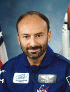

Lyndon B. Johnson Space Center
Houston, Texas 77058
|
National Aeronautics and Space Administration Lyndon B. Johnson Space Center Houston, Texas 77058 |
 |
Biographical Data |
||
DR. FRANCO MALERBA, PH.D.
PAYLOAD SPECIALIST
Dr. Franco Malerba is the first Italian astronaut. He flew in 1992 as a Payload Specialist aboard the STS-46 mission of the Space Shuttle. This particular space mission, primarily devoted to testing the Italian Tethered Satellite System (TSS) from earth orbit, represented a special collaborative effort in international space cooperation between the United States and Italy. Dr.Malerba, selected and trained by NASA and the Italian Space Agency (ASI), was in charge of conducting the science investigations and operating the Tethered Satellite instruments during the 8-day space mission.
Born in Busalla, Italy in 1946, Dr. Malerba graduated Summa cum laude from the University of Genoa in 1970 with a doctorate in electronics engineering and a specialisation in telecommunications. After research work for the Italian National Reasearch Council (Camogli, Italy) and the prestigious National Institutes of Health (Bethesda, Maryland, USA), he earned a second doctorate in physics with a specialisation in biophysics from the University of Genoa, where he was a member of the physics faculty. Dr. Malerba then served his country as a reserve officer of the Italian Navy.
Fluent in English, French, and, of course Italian, Dr. Malerba was selected by the European Space Agency (ESA) in 1978 as one of four Astronaut candidates for the first Spacelab mission. After this selection, he became staff member at the Space Science Department of the European Space Tchnology Center (ESTEC) in Noordwijk (Netherland). From 1981 until his selection for space flight in 1989, Dr.Malerba worked in the field of telecommunications and computer networks and held technical management and consulting positions at Digital Equipment Corporation in Geneva, Switzerland, in Rome, Italy, and in Sophia Antipolis, France.
After his space flight was elected a Member of the European Parliament in the North-West district of Italy. From 1994 until 1999 he served in the Committees for Research and Technology and for Industrial Policy and was rapporteur for the European framework program for research in the field of information and telecommunications technologies. Was also a Member of the joint delegation between the European Parliament and the US Congress. Presently he works with Alenia Spazio at the development of new space projects.
Founding Member of the Italian Space Society, Genovese of the year 1993, author of several scientific publications, Dr. Malerba enjoys giving lectures to College and University classes in Italy to promote science and technology among the students. He is a correspondent on technology and industrial policy matters of the major Italian newspapers (Corriere della Sera, La Stampa, Secolo XIX, Sole 24 ore, La Repubblica) and is the author of a book - La Vetta/The Summit - a vivid logbook of his experience in space.
MARCH 2000
This is the only version available from NASA. Updates must be sought direct from the above named individual.
{kind=link}